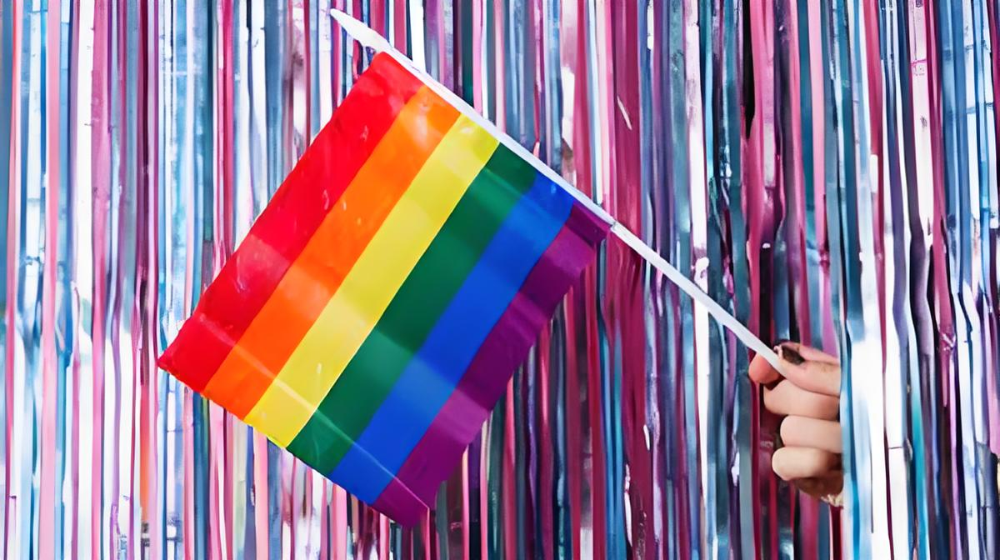

性别流动性探索
Gender Fluidity Exploration
性别流动性是一个描述性别身份可能随时间变化的概念。它挑战了传统的二元性别观念，允许个体根据自己的感受和经历来定义自己的性别。
Gender fluidity is a concept that describes a gender identity that can change over time. It challenges traditional binary gender views, allowing individuals to define their gender based on their own feelings and experiences.
了解更多 Learn More关于性别流动性
About Gender Fluidity
性别流动性（Genderfluid），又称流性别/Gender-fluid，性别流动/Gender Fluid，或流体性别/Fluid Gender，是一个位于多性别，非二元性别，以及跨性别伞下的性别身份。流动性别的个体在不同时间有不同的性别身份。一个流动性别个体的性别认同可以一时存在多个，然后切换成完全没有性别认同，或者在单个的性别认同间移动，或者是其中其它的一些组合。
Genderfluid, also known as Gender-fluid, Gender Fluid, or Fluid Gender, is a term related to non-binary and multiple gender identities that move between different gender expressions over time. A genderfluid individual may experience multiple gender identities simultaneously, switch between having no gender identity at all, move between single gender identities, or experience some combination of these states.
探索性别流动性的历史
Exploring the History of Gender Fluidity
性别流动性是一个历史悠久的概念，它在不同的文化和社会中以多种形式存在。以下是一些具体的历史和社会文化例子，展示了性别流动性的多样性和深远影响。
Gender fluidity is a long-standing concept that has existed in various forms across different cultures and societies. Below are some specific historical and sociocultural examples that demonstrate the diversity and profound impact of gender fluidity.
古印度
Ancient India
在古印度，中性人社群如Hijra，他们的存在可以追溯到古代文献，如《爱经》和两大史诗《罗摩衍那》和《摩诃婆罗多》。这些中性人社群中的成员通常出生时被认定为男性，但他们在社会中扮演着独特的性别角色，有时被认为是无性恋者，以其神圣特质而著称。
In ancient India, gender-neutral communities like Hijra can be traced back to ancient texts such as the Kama Sutra and the two great epics Ramayana and Mahabharata. Members of these gender-neutral communities were typically assigned male at birth but played unique gender roles in society, sometimes being regarded as asexual and renowned for their sacred qualities.
古希腊和罗马
Ancient Greece and Rome
在古希腊和罗马，性别流动性在神话和艺术中有所体现，如赫马佛洛狄忒斯的故事。赫马佛洛狄忒斯是赫尔墨斯和阿佛洛狄忒的结合体，象征着男性和女性的融合。此外，古希腊的“女性亚马逊人”和罗马的“女性战士”也展示了性别角色的多样性。
In ancient Greece and Rome, gender fluidity was reflected in mythology and art, such as the story of Hermaphroditus. Hermaphroditus, a fusion of Hermes and Aphrodite, symbolized the merger of male and female. Additionally, the "Amazon women" of ancient Greece and the "female warriors" of Rome demonstrated the diversity of gender roles.
北美原住民
Native American Indigenous Peoples
北美原住民文化中的“Two-Spirit”个体，他们被认为是具有男性和女性精神的人。这些个体在社会中扮演着特殊的角色，如治疗师、调解者和精神领袖。他们的存在挑战了传统的二元性别观念，为性别多样性提供了深刻的文化理解。
In Native American cultures, "Two-Spirit" individuals were considered to possess both male and female spirits. These individuals played special roles in society, such as healers, mediators, and spiritual leaders. Their existence challenged traditional binary gender concepts and provided a profound cultural understanding of gender diversity.
近现代
Modern Era
随着社会的进步，性别流动性逐渐被更多人接受和理解。例如，名人如麦莉·赛勒斯公开讨论他们的性别流动性，这使得这一概念在主流文化中得到了更多的关注。此外，跨性别者和非二元性别者的权利运动也推动了社会对性别多样性的认识和接受。
With social progress, gender fluidity has gained increasing acceptance and understanding. For example, celebrities like Miley Cyrus openly discussing their gender fluidity has brought more attention to this concept in mainstream culture. Additionally, the rights movements of transgender and non-binary individuals have promoted societal awareness and acceptance of gender diversity.
相关资源
Related Resources
我们精选了一些关于性别流动性的资源，包括文章、视频和研究报告，以帮助您更深入地了解这一主题。
We have curated a selection of resources about gender fluidity, including articles, videos, and research reports, to help you gain a deeper understanding of this topic.
用户推荐
“这个网站让我意识到性别可以是流动的，而不是固定不变的。它帮助我接受了自己。”
— Diavolo
“通过参与挑战，我学到了性别多样性的许多知识，并与其他性别认同的人建立了联系。”
— Danggui
“在这里，我找到了一个支持和理解的社区，让我感到不再孤单。”
— Jiang
加入我们
Join us
成为性别流动性运动的一部分，分享你的故事，启发他人。
Be part of the Gender Mobility movement, share your story and inspire others.
分享你的故事